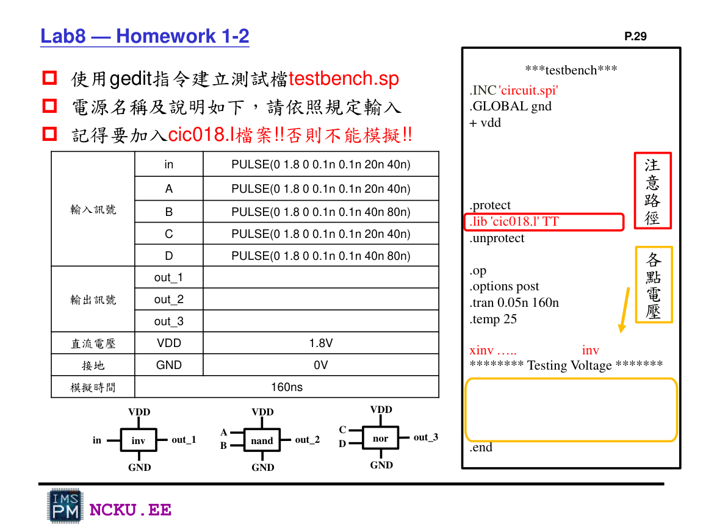

Input / Output 完整說明
Lab8 的 input 是 PULSE 電壓源，output 是 out_1、out_2、out_3。模擬時間為 160ns。

Lab8 講義指定的 input pulse、output node、VDD/GND 與模擬時間。
Input 設定
| 訊號 | PULSE | 用途 |
|---|---|---|
| in | 20n / 40n | 測 inverter |
| A | 20n / 40n | 測 NAND input A |
| B | 40n / 80n | 測 NAND input B |
| C | 20n / 40n | 測 NOR input C |
| D | 40n / 80n | 測 NOR input D |
Output 判斷
out_1
應該永遠與 in 相反：in=0 → out_1=1.8V；in=1.8V → out_1=0V。
out_2
NAND：只有 A、B 同時為高電位時，out_2 會被 NMOS series path 拉到 0V。
out_3
NOR：只有 C、D 同時為低電位時，PMOS series path 全通，out_3 才會是 1.8V。